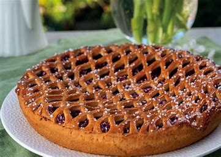

Wij zijn ervan overtuigd dat onze bakkerij de allerbeste Limburgse vlaaien maakt, en dat is niet zomaar een loze bewering. Het is het resultaat van toewijding, traditie en een diepgewortelde passie voor het vak.
Allereerst draait alles om onze ingrediënten. We selecteren met zorg de beste lokale producten. Onze fruitvullingen zijn gemaakt van verse, rijpe vruchten die barsten van smaak. Het deeg wordt bereid volgens de traditionele methoden die al generaties in onze familie worden doorgegeven. Dit betekent dat elk ingrediënt dat we gebruiken van topkwaliteit is, en dat proef je.
Wat ons onderscheidt, is ons respect voor traditie. We houden vast aan de klassieke Limburgse recepten die generaties lang zijn doorgegeven. Het zijn deze traditionele methoden die onze vlaaien hun unieke smaak en textuur geven. We koesteren het erfgoed van onze bakkerij en laten dat doorklinken in elk gebakje dat we maken.
Bovendien is aandacht voor detail een hoeksteen van ons vakmanschap. Elke vlaai die onze bakkerij verlaat, is met de hand gemaakt en zorgvuldig gedecoreerd. We besteden veel tijd aan de presentatie, zodat elke vlaai er net zo verleidelijk uitziet als hij smaakt.
Onze klanten weten dat wanneer ze een Limburgse vlaai bij ons kopen, ze niet alleen een lekkernij krijgen, maar ook een stukje Limburgse traditie en liefde voor het bakkersambacht. We zijn er trots op dat we bij elke hap herinneringen creëren en mensen laten genieten van de smaken die ze kennen en koesteren.
Waarom maken wij de beste Limburgse vlaaien? Omdat we geloven in de kracht van traditie, de kwaliteit van de ingrediënten en de liefde voor ons vak. We zijn vastbesloten om onze reputatie hoog te houden en om iedereen te laten proeven waarom onze vlaaien ongeëvenaard zijn."
